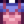

Sweet Pea
Jump to navigation
Jump to search
| Sweet Pea | |||||||||||||||||||||||
| A fragrant summer flower. | |||||||||||||||||||||||
| Information | |||||||||||||||||||||||
| Source | Foraging • Summer Seeds | ||||||||||||||||||||||
| Season | |||||||||||||||||||||||
| XP | 7 Foraging XP | ||||||||||||||||||||||
| Energy / Health |
|
||||||||||||||||||||||
|
|||||||||||||||||||||||
The Sweet Pea is a flower found via Foraging in Summer. It is most commonly found in Pelican Town, where it is the only summer forage item, but also grows in Cindersap Forest, the Bus Stop, the Railroad, and the Forest Farm Map. It can also be grown from Summer wild seeds.
Healing
The Sweet Pea is edible, but does not increase Energy or Health.
Gifting
| Villager Reactions
| |
|---|---|
| Love | |
| Like | |
| Dislike | |
Bundles
A Sweet Pea is used in the  Summer Foraging Bundle in the Crafts Room.
Summer Foraging Bundle in the Crafts Room.
Recipes
| Image | Name | Description | Ingredients | Recipe Source | Sell Price |
|---|---|---|---|---|---|
| Wild Seeds (Su) | An assortment of wild summer seeds. (Produces 10 Summer Seeds per craft.) |
Tailoring
Sweet Pea is used in the spool of the Sewing Machine to create a Shirt.  It can be used in dyeing, serving as a purple dye at the dye pots, located in Emily's and Haley's house, 2 Willow Lane.
Quests
- The Sweet Pea may be randomly requested in Summer at the "Help Wanted" board outside Pierre's General Store for a reward of
 150g and 150 Friendship points.
150g and 150 Friendship points.
History
| Foraging | |
|---|---|
| Basic | Sap |
| Spring | Common Mushroom • Daffodil • Dandelion • Leek • Morel • Salmonberry • Spring Onion • Wild Horseradish |
| Summer | Fiddlehead Fern • Grape • Red Mushroom • Spice Berry • Sweet Pea |
| Fall | Blackberry • Chanterelle • Common Mushroom • Hazelnut • Wild Plum |
| Winter | Crocus • Crystal Fruit • Holly • Snow Yam • Winter Root |
| The Beach | Clam • Cockle • Coral • Mussel • Nautilus Shell • Oyster • Rainbow Shell • Sea Urchin • Seaweed |
| The Mines | Cave Carrot • Purple Mushroom • Red Mushroom |
| The Desert | Cactus Fruit • Coconut |
| Skull Cavern | Dinosaur Egg • Fiddlehead Fern |
| Ginger Island | Ginger • Magma Cap |